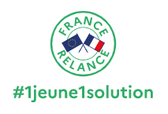

https://www.education.gouv.fr/l-obligation-de-formation-des-16-18-ans-306954
Extraits :
Près de 80 000 jeunes sortent chaque année du système scolaire sans
aucune qualification et 60 000 mineurs ne sont ni en études, ni en
formation, ni en emploi. Ils rencontrent de grandes difficultés pour
s'insérer dans le marché du travail et sont les premières victimes
de la pauvreté.
Ainsi depuis la rentrée 2020, afin qu'aucun jeune ne soit laissé
dans une situation où il ne serait ni en études, ni en formation,
ni en emploi, l'obligation de se former est prolongée jusqu'à
l'âge de 18 ans.
L’obligation de formation permet de repérer et d'amener vers un
parcours d'accompagnement et de formation les jeunes en risque
d'exclusion.
Est concerné tout mineur de 16 à 18 ans :
•
en situation de décrochage du système scolaire
•
diplômé ou non
et qui n'est ni en emploi ni en éducation ni en formation.
Il appartient à toute structure
ayant repéré un jeune relevant de l'obligation de formation ou ayant
accueilli un jeune se présentant spontanément de :
•
l'orienter vers la mission locale ou vers le CIO dont il
dépend
•
informer ces structures de ce repérage
•
remobiliser le jeune et à ne pas le perdre de vue
Les missions locales
sont chargées d’assurer le respect de cette obligation de formation,
en lien étroit avec les autres acteurs.
Le conseiller construit un parcours
pouvant combiner plusieurs solutions
avec le jeune et son représentant légal :
• les
dispositifs de lutte contre le décrochage scolaire
• la
formation initiale et continue
• l'offre de services du service public de l'emploi
et de ses partenaires
•
l'engagement et le volontariat
Le but est de permettre aux jeunes d'accéder à l'emploi et/ou à un diplôme ou une certification.
Plusieurs cas de figure sont possibles :
• soit le jeune choisit un retour en formation scolaire, il va donc
continuer d'être
suivi par les services de l'éducation nationale qui s'assureront
de la disponibilité de sa formation et de son inscription
• soit le jeune opte pour un dispositif d'accompagnement vers
l'emploi et l'insertion mis en œuvre au sein des missions locales,
qui s'assureront de sa mobilisation notamment par le biais de la
signature d'un contrat d'engagement
• soit le jeune est orienté vers un autre acteur pour poursuivre son
parcours
d'accompagnement ou de formation professionnelle.
Dans l'optique du "Dites-le nous une fois", le référent s'assure que
les informations sur le jeune et sur son diagnostic soient bien
transmises, avec son accord et dans le respect de la RGPD .
Consultez aussi :

https://www.1jeune1solution.gouv.fr/accueil